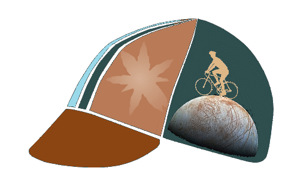

(*) 1 kiloToise = 1949 meters


This format of cycling events is not new, for instance, in the Pyrenees with les Barons du Soulor-Aubisque or l'Ariègeoise perpétuelle, in the Alps with les 7 majeurs, or others like the Everesting Challenge, cyclosportives, brevets... There is already a large panel that worth looking at!
Europe 
Earth

Neptune

My planet!
Info